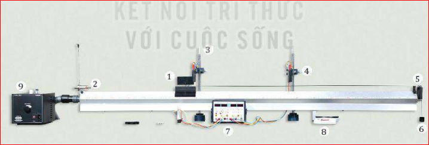

Đẩy một xe chở hàng cho nó chuyển động và nhận xét xem gia tốc của xe tăng hay giảm, nếu:
a) Giữ nguyên lực đẩy nhưng khối lượng xe tăng lên (Hình a và b).
b) Giữ nguyên khối lượng nhưng lực đẩy tăng lên (Hình b và c).
a)
b)
c)
Từ những quan sát và thí nghiệm cho thấy gia tốc của một vật không chỉ phụ thuộc vào lực tác dụng mà còn phụ thuộc vào khối lượng của vật.
Mối liên hệ giữa ba đại lượng: gia tốc, lực và khối lượng đã được Newton khái quát trong một phương trình vectơ đơn giản gọi là định luật 2 Newton:
Phát biểu định luật:
Gia tốc của một vật cùng hướng với lực tác dụng lên vật. Độ lớn của gia tốc tỉ lệ thuận với độ lớn của lực và tỉ lệ nghịch với khối lượng của vật.
Xét về mặt Toán học, định luật 2 Newton có thể viết là:
Lưu ý:
Trong trường hợp vật chịu nhiều lực tác dụng \(\vec{F}_1, \vec{F}_2, \vec{F}_3,...\) thì \(\vec{F}\) là hợp lực của các lực đó:
\(\vec{F} = \vec{F}_1 + \vec{F}_2 + \vec{F}_3 + ...\)
Lúc đầu, khối lượng chỉ được hiểu là một đại lượng dùng để chỉ lượng của chất chứa trong vật. Nhưng định luật 2 Newton còn cho ta một cách hiểu mới về khối lượng.
Thật vậy, theo định luật 2 Newton, nếu có nhiều vật khác nhau lần lượt chịu tác dụng của cùng một lực không đổi, thì vật nào có khối lượng lớn hơn sẽ có gia tốc nhỏ hơn. Vậy, vật nào có khối lượng càng lớn thì càng khó thay đổi vận tốc, tức là càng có mức quán tính lớn hơn. Từ đó ta có thể nói:
Điều đó cho phép ta so sánh được khối lượng của những vật làm bằng các chất khác nhau. Một xe chở cát và một xe chở gạo được coi là có khối lượng bằng nhau nếu dưới tác dụng của hợp lực như nhau, chúng có gia tốc như nhau.
Dựa vào biểu thức \(\vec{F} = m \cdot \vec{a}\) ta có mối liên hệ:
\(1 \text{ N} = 1 \text{ kg} \cdot 1 \text{ m/s}^2\)
1 N là độ lớn của lực gây ra gia tốc \(1 \text{ m/s}^2\) cho vật khối lượng 1 kg, theo hướng của lực.
| Đại lượng | Kí hiệu | Đơn vị |
|---|---|---|
| Gia tốc | a | m/s² |
| Khối lượng | m | kg |
| Lực | F | N |
Thí nghiệm được thiết lập như Hình 15.2.

Hình 15.2. Thí nghiệm minh hoạ định luật 2 Newton
Dụng cụ:
Tiến hành:
Bảng 15.1. Bảng ghi kết quả thí nghiệm
| Lực kéo F (N) | 1 | 1 | 1 | 2 | 3 |
|---|---|---|---|---|---|
| Khối lượng (M+m) (kg) | 0,3 | 0,4 | 0,5 | 0,5 | 0,5 |
| Thời gian t (s) | 0,55 | 0,64 | 0,71 | 0,50 | 0,42 |
| Gia tốc \(a = \frac{2s}{t^2} \text{ (m/s}^2)\) | 3,31 | 2,44 | 1,99 | 4,03 | 5,67 |
a) Dựa vào số liệu Bảng 15.1, hãy vẽ đồ thị chỉ sự phụ thuộc của gia tốc a vào F (ứng với M+m = 0,5 kg) và vào 1/(m+M) (ứng với F = 1N). Đồ thị có phải đường thẳng không? Tại sao?
b) Nêu kết luận về sự phụ thuộc của gia tốc vào độ lớn của lực và khối lượng.
Hướng dẫn:
- Vẽ đồ thị theo số liệu, ta sẽ thu được các đường thẳng đi qua gốc tọa độ.
- Đồ thị a - F là đường thẳng vì gia tốc tỉ lệ thuận với lực tác dụng (khi m không đổi).
- Đồ thị a - 1/(M+m) là đường thẳng vì gia tốc tỉ lệ nghịch với khối lượng (khi F không đổi).
Kết luận: Gia tốc của một vật tỉ lệ thuận với lực tác dụng và tỉ lệ nghịch với khối lượng của vật.
1. Trong các cách viết hệ thức của định luật 2 Newton sau đây, cách viết nào đúng?
A. \(\vec{F} = m \cdot a\)
B. \(\vec{F} = -m \cdot \vec{a}\)
C. \(\vec{F} = m \cdot \vec{a}\)
D. \(-\vec{F} = m \cdot \vec{a}\)
2. Một quả bóng khối lượng 0,50 kg đang nằm yên trên mặt đất. Một cầu thủ đá bóng với một lực 250 N. Thời gian chân tác dụng vào bóng là 0,02 s. Quả bóng bay đi với tốc độ:
A. 0,01 m/s
B. 0,10 m/s
C. 2,50 m/s
D. 10,00 m/s
3. Dưới tác dụng của hợp lực 20 N, một chiếc xe đồ chơi chuyển động với gia tốc 0,4 m/s². Dưới tác dụng của hợp lực 50 N, chiếc xe sẽ chuyển động với gia tốc bao nhiêu?
4. Tại sao máy bay khối lượng càng lớn thì đường băng phải càng dài?
Bài 1: Một ô tô khối lượng 2 tấn đang chạy với tốc độ 72 km/h thì hãm phanh. Xe đi thêm được 50 m thì dừng lại. Tính độ lớn lực hãm phanh.
Bài 2: Một lực F truyền cho vật khối lượng \(m_1\) một gia tốc \(2 \text{ m/s}^2\), truyền cho vật khối lượng \(m_2\) gia tốc \(6 \text{ m/s}^2\). Hỏi lực F sẽ truyền cho vật khối lượng \(m = m_1 + m_2\) gia tốc là bao nhiêu?
Bài 3: Tác dụng một lực bằng 50 N lên một vật khối lượng 5 kg đặt trên mặt bàn nằm ngang. Bỏ qua ma sát. Tìm quãng đường vật đi được trong giây thứ 3.
Hãy chọn đáp án đúng nhất cho các câu hỏi dưới đây: